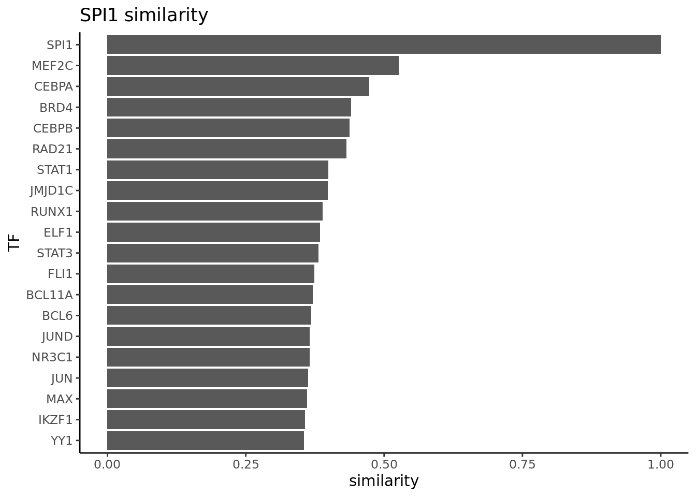

3 Advanced workflow with MultiAssayExperiment
In this chapter, we illustrate the epiregulon workflow starting from data in the form of SingleCellExperiment objects using the Wilcoxon weight estimation method.
This is a dataset of hematopoiesis from the ArchR tutorial. Prior to using epiregulon, this dataset has been fully preprocessed in ArchR, and converted to a MultiAssayExperiment using epireglon.archr::archr2MAE. The MAE object was uploaded to scMultiome for full reproducibility. In this dataset, scRNAseq and scATACseq were unpaired and integrated by the ArchR::addGeneIntegrationMatrix function.
3.1 Data preparation
Download the example dataset from scMultiome package
mae <- scMultiome::hematopoiesis()
# Load peak matrix
PeakMatrix <- mae[["PeakMatrix"]]
# Load expression matrix
GeneExpressionMatrix <- mae[["GeneIntegrationMatrix"]]
# Add gene symbols to rownames
rownames(GeneExpressionMatrix) <- rowData(GeneExpressionMatrix)$name
# Transfer dimensionality reduction matrix to GeneExpression
reducedDim(GeneExpressionMatrix, "IterativeLSI") <-
reducedDim(mae[['TileMatrix500']], "IterativeLSI")
reducedDim(GeneExpressionMatrix, "UMAP") <-
reducedDim(mae[['TileMatrix500']], "UMAP")Visualize the data
scater::plotReducedDim(GeneExpressionMatrix,
dimred = "UMAP",
text_by = "Clusters2",
colour_by = "Clusters2",
point_size = 0.3,
point_alpha = 0.3)
3.2 Retrieve bulk TF ChIP-seq binding sites
First, we retrieve the information of TF binding sites collected from Cistrome and ENCODE ChIP-seq. Currently, human genomes hg19 and hg38 and mouse genome mm10 are available
## snapshotDate(): 2024-03-11## see ?scMultiome and browseVignettes('scMultiome') for documentation## loading from cache## GRangesList object of length 1558:
## $AEBP2
## GRanges object with 2761 ranges and 0 metadata columns:
## seqnames ranges strand
## <Rle> <IRanges> <Rle>
## [1] chr1 10001-10446 *
## [2] chr1 877485-877780 *
## [3] chr1 919866-920161 *
## [4] chr1 2985496-2985846 *
## [5] chr1 2985975-2986514 *
## ... ... ... ...
## [2757] chrY 8333302-8333771 *
## [2758] chrY 13842450-13842966 *
## [2759] chrY 13868154-13868670 *
## [2760] chrY 21464547-21465020 *
## [2761] chrY 22147548-22147868 *
## -------
## seqinfo: 25 sequences from an unspecified genome; no seqlengths
##
## ...
## <1557 more elements>3.3 Link ATACseq peaks to target genes
Next, we compute peak to gene correlations using a custom algorithm that has similar performance to ArchR’s P2G function. Wherever possible, use a multidimensional dimensionality reduction matrix such as LSI or PCA instead of UMAP or TSNE since the former provides a more accurate estimate of cell similarity.
set.seed(1010)
p2g <- calculateP2G(peakMatrix = PeakMatrix,
expMatrix = GeneExpressionMatrix,
exp_assay = "normalizedCounts",
reducedDim = reducedDim(GeneExpressionMatrix, "IterativeLSI"))## Using epiregulon to compute peak to gene links...## performing k means clustering to form metacells## Computing correlation## DataFrame with 11694 rows and 8 columns
## idxATAC chr start end idxRNA target Correlation distance
## <integer> <character> <integer> <integer> <integer> <array> <matrix> <integer>
## 1 7 chr1 801002 801502 2 LINC00115 0.627327 36099
## 2 24 chr1 894453 894953 6 KLHL17 0.617991 0
## 3 25 chr1 894960 895460 6 KLHL17 0.564360 0
## 4 25 chr1 894960 895460 9 ISG15 0.524174 51386
## 5 37 chr1 935289 935789 8 HES4 0.509850 0
## ... ... ... ... ... ... ... ... ...
## 11690 146390 chr22 50980758 50981258 12088 MAPK8IP2 0.600164 55872
## 11691 146393 chr22 50983942 50984442 12079 NCAPH2 0.532094 37097
## 11692 146403 chr22 51021154 51021654 12078 LMF2 0.502373 73018
## 11693 146403 chr22 51021154 51021654 12089 ARSA 0.577122 44747
## 11694 146412 chr22 51110826 51111326 12090 SHANK3 0.532273 03.4 Add TF motif binding to peaks
The next step is to add the TF motif binding information by overlapping the regions of the peak matrix with the bulk chip-seq database.
## Computing overlap...## Success!## idxATAC idxTF tf
## 1013 7 13 ARNT
## 1014 7 17 ATF2
## 1015 7 21 ATF7
## 1016 7 28 BCL6
## 1017 7 30 BCOR
## 1018 7 32 BHLHE403.5 Generate regulons
A long format dataframe, representing the inferred regulons, is then generated. The dataframe consists of three columns:
- tf (transcription factor)
- target gene
- peak to gene correlation between tf and target gene
## DataFrame with 1712540 rows and 10 columns
## idxATAC chr start end idxRNA target distance idxTF tf corr
## <integer> <character> <integer> <integer> <integer> <character> <integer> <integer> <character> <matrix>
## 1 7 chr1 801002 801502 2 LINC00115 36099 13 ARNT 0.627327
## 2 7 chr1 801002 801502 2 LINC00115 36099 17 ATF2 0.627327
## 3 7 chr1 801002 801502 2 LINC00115 36099 21 ATF7 0.627327
## 4 7 chr1 801002 801502 2 LINC00115 36099 28 BCL6 0.627327
## 5 7 chr1 801002 801502 2 LINC00115 36099 30 BCOR 0.627327
## ... ... ... ... ... ... ... ... ... ... ...
## 1712536 146412 chr22 51110826 51111326 12090 SHANK3 0 1172 POLR2AphosphoS5 0.532273
## 1712537 146412 chr22 51110826 51111326 12090 SHANK3 0 1312 ZNF16 0.532273
## 1712538 146412 chr22 51110826 51111326 12090 SHANK3 0 1461 ZNF600 0.532273
## 1712539 146412 chr22 51110826 51111326 12090 SHANK3 0 1490 ZNF687 0.532273
## 1712540 146412 chr22 51110826 51111326 12090 SHANK3 0 1520 ZNF777 0.5322733.6 Prune network
Epiregulon prunes the network by performing tests of independence on the observed number of cells jointly expressing transcription factor (TF), regulatory element (RE) and target gene (TG) vs the expected number of cells if TF/RE and TG are independently expressed. We implement two tests, the binomial test and the chi-square test. In the binomial test, the expected probability is P(TF, RE) * P(TG), and the number of trials is the total number of cells, and the observed successes is the number of cells jointly expressing all three elements. In the chi-square test, the expected probability for having all 3 elements active is also P(TF, RE) * P(TG) and the probability otherwise is 1- P(TF, RE) * P(TG). The observed cell count for the active category is the number of cells jointly expressing all three elements, and the cell count for the inactive category is n - n_triple.
We calculate cluster-specific p-values if users supply cluster labels. This is useful if we are interested in cluster-specific networks. The pruned regulons can then be used to visualize differential networks for transcription factors of interest. See section on differential networks.
pruned.regulon <- pruneRegulon(expMatrix = GeneExpressionMatrix,
exp_assay = "normalizedCounts",
peakMatrix = PeakMatrix,
peak_assay = "counts",
regulon = regulon,
prune_value = "pval",
regulon_cutoff = 0.05,
clusters = GeneExpressionMatrix$Clusters2)## pruning network with chi.sq tests using a regulon cutoff of pval<0.05## pruning regulons3.7 Add Weights
While the pruneRegulon function provides statistics on the joint occurrence of TF-RE-TG, we would like to further estimate the strength of regulation. Biologically, this can be interpreted as the magnitude of gene expression changes induced by transcription factor activity. Epiregulon estimates the regulatory potential using one of the three measures: 1) correlation between TG and TF or between TG and the product of TF and RE, 2) mutual information between TG and TF expression or between TG and the product of TF and RE, or 3) Wilcoxon test statistics of target gene expression in cells jointly expressing all 3 elements vs cells that do not.
Two measures (correlation and Wilcoxon) give both the magnitude and directionality of changes whereas mutational information is always positive. The correlation and mutual information statistics are computed on grouped pseudobulks by user-supplied cluster labels and yield a single weight across all clusters per each TF-RE-target triplet. In contrast, the Wilcoxon method group cells based on the joint expression of TF, RE and TG in each single cell or in cell aggregates. If cell labels are provided, we calculate cluster-specific weights in addition to estimating weights from all the cells. Cell aggregation uses a default value of 10 cells and can help overcome sparsity and speed up computation. If cluster labels are provided, we can obtain weights of individual clusters and all cells combined.
In this example, we apply Wilcoxon test on cell aggregates of 10 cells. We use the Wilcoxon weight method because we are interested in computing cell type-specific weights.
set.seed(1010)
regulon.w <- addWeights(regulon = pruned.regulon,
expMatrix = GeneExpressionMatrix,
exp_assay = "normalizedCounts",
peakMatrix = PeakMatrix,
peak_assay = "counts",
clusters = GeneExpressionMatrix$Clusters2,
aggregateCells = TRUE,
method = "wilcox",
useDim = "IterativeLSI")## adding weights using wilcoxon...## performing pseudobulk using an average of 10 cells## DataFrame with 343577 rows and 14 columns
## idxATAC chr start end idxRNA target distance idxTF tf corr
## <integer> <character> <integer> <integer> <integer> <character> <integer> <integer> <character> <matrix>
## 1 891 chr1 9223922 9224422 107 H6PD 68440 1030 ADNP 0.566311
## 2 1154 chr1 11724524 11725024 135 FBXO6 174 1030 ADNP 0.505591
## 3 1476 chr1 16003338 16003838 181 DDI2 59185 1030 ADNP 0.672807
## 4 2329 chr1 25237599 25238099 295 RUNX3 53313 1030 ADNP 0.865375
## 5 2333 chr1 25241815 25242315 295 RUNX3 49097 1030 ADNP 0.751697
## ... ... ... ... ... ... ... ... ... ... ...
## 343573 131524 chr19 12895246 12895746 8765 KLF1 102071 473 ZSCAN29 0.734430
## 343574 134071 chr19 41768840 41769340 9199 TGFB1 90291 473 ZSCAN29 0.635403
## 343575 135998 chr19 54711800 54712300 9580 MBOAT7 16066 473 ZSCAN29 0.793423
## 343576 144131 chr22 30838237 30838737 11838 SF3A1 83323 473 ZSCAN29 0.502352
## 343577 144587 chr22 37297198 37297698 11901 CSF2RB 9976 473 ZSCAN29 0.672100
## pval stats qval weight
## <matrix> <matrix> <matrix> <matrix>
## 1 2.42572e-53:1:1.00000:... 236.3764:0:0.00000000:... 3.77430e-47:1:1:... 0.352108:-0.0572865:0.218160:...
## 2 1.70871e-07:1:0.96773:... 27.3374:0:0.00163667:... 2.42454e-01:1:1:... 0.163694: 0.1313720:0.236942:...
## 3 2.50344e-04:1:1.00000:... 13.4096:0:0.00000000:... 1.00000e+00:1:1:... 0.177100: 0.0000000:0.000000:...
## 4 7.39278e-14:1:1.00000:... 55.9609:0:0.00000000:... 1.08689e-07:1:1:... 0.427978: 0.0000000:0.281650:...
## 5 2.20925e-10:1:1.00000:... 40.2722:0:0.00000000:... 3.19614e-04:1:1:... 0.313465: 0.0000000:0.229459:...
## ... ... ... ... ...
## 343573 5.96086e-04:1:1:... 11.788160:0:0:... 1:1:1:... 0.174968:-0.0612248: 0.0000000:...
## 343574 7.23903e-01:1:1:... 0.124784:0:0:... 1:1:1:... 0.157035: 0.1168639:-0.1527121:...
## 343575 4.26510e-02:1:1:... 4.109182:0:0:... 1:1:1:... 0.227676:-0.0954814: 0.0000000:...
## 343576 2.76179e-05:1:1:... 17.575117:0:0:... 1:1:1:... 0.255186:-0.0791276:-0.0727201:...
## 343577 1.12773e-03:1:1:... 10.605155:0:0:... 1:1:1:... 0.253897:-0.1591292: 0.0000000:...3.8 Calculate TF activity
Finally, the activities for a specific TF in each cell are computed by averaging the weighted expressions of target genes linked to the TF weighted. \[y=\frac{1}{n}\sum_{i=1}^{n} x_i * weight_i\] where \(y\) is the activity of a TF for a cell \(n\) is the total number of targets for a TF \(x_i\) is the log count expression of target i where i in {1,2,…,n} \(weight_i\) is the weight of TF and target i
score.combine <- calculateActivity(expMatrix = GeneExpressionMatrix,
regulon = regulon.w,
mode = "weight",
method = "weightedMean",
exp_assay = "normalizedCounts")## calculating TF activity from regulon using weightedmean## Warning in calculateActivity(expMatrix = GeneExpressionMatrix, regulon = regulon.w, : The weight column contains multiple
## subcolumns but no cluster information was provided. Using first column to compute activity...## aggregating regulons...## creating weight matrix...## calculating activity scores...## normalize by the number of targets...## 5 x 5 sparse Matrix of class "dgCMatrix"
## scATAC_BMMC_R1#TTATGTCAGTGATTAG-1 scATAC_BMMC_R1#AAGATAGTCACCGCGA-1 scATAC_BMMC_R1#GCATTGAAGATTCCGT-1
## ADNP 0.1441244 0.2181751 0.1829715
## AFF1 0.1812722 0.1908101 0.5706316
## AFF4 0.1226549 0.3673765 0.1364362
## AGO1 0.1818927 0.2179344 0.1032600
## AGO2 0.0791438 0.4689620 0.1131031
## scATAC_BMMC_R1#TATGTTCAGGGTTCCC-1 scATAC_BMMC_R1#AGTTACGAGAACGTCG-1
## ADNP 0.1636268 0.15758333
## AFF1 0.1928402 0.19996029
## AFF4 0.2080821 0.13736470
## AGO1 0.1678979 0.22520235
## AGO2 0.2267187 0.067712023.9 Differential TF activity test
We can next determine which TFs exhibit differential activities across cell clusters/groups via the findDifferentialActivity function. This function depends on findMarkers function from scran package.
library(epiregulon.extra)
markers <- findDifferentialActivity(activity_matrix = score.combine,
clusters = GeneExpressionMatrix$Clusters2,
pval.type = "some",
direction = "up",
test.type = "t")getSigGenes compiles the different test results into a single dataframe and enables user to supply their desired cutoffs for significance and variable to order by.
## Using a logFC cutoff of 0.2 for class B for direction equal to any## Using a logFC cutoff of 0.5 for class CD4.M for direction equal to any## Using a logFC cutoff of 0.4 for class CD4.N for direction equal to any## Using a logFC cutoff of 0.3 for class CLP for direction equal to any## Using a logFC cutoff of 0.4 for class Erythroid for direction equal to any## Using a logFC cutoff of 0.2 for class GMP for direction equal to any## Using a logFC cutoff of 0.9 for class Mono for direction equal to any## Using a logFC cutoff of 0.5 for class NK for direction equal to any## Using a logFC cutoff of 0.2 for class pDC for direction equal to any## Using a logFC cutoff of 0.3 for class PreB for direction equal to any## Using a logFC cutoff of 0.2 for class Progenitor for direction equal to any3.10 Visualizing TF activities
Epiregulon also provides multiple options for visualizing the inferred TF activities by reduced dimensional space
tSNE or UMAP plots:
options(ggrastr.default.dpi=300)
tfs_interest <- c("EBF1","PAX5", "GATA3","SPI1")
plotActivityDim(sce = GeneExpressionMatrix,
activity_matrix = score.combine[tfs_interest,],
tf = tfs_interest,
dimtype = "UMAP",
nrow=2,
ncol=2,
point_size=0.1,
rasterise = TRUE)
We can compare the activity with gene expression of the same TFs.
plotActivityDim(sce = GeneExpressionMatrix,
activity_matrix = assay(GeneExpressionMatrix, "normalizedCounts")[tfs_interest,],
tf = tfs_interest,
dimtype = "UMAP",
nrow=2,
ncol=2,
legend.label = "Gex",
colors = c("grey","blue"),
point_size=0.1,
rasterise = TRUE)
We can also plot violin plot to visualize TF activity.
plotActivityViolin(activity_matrix = score.combine,
tf = tfs_interest,
clusters = GeneExpressionMatrix$Clusters2,
legend.label = "Gex",
nrow=2,
ncol=2)
We plot violin plot to visualize TF gene expression.
plotActivityViolin(activity_matrix = assay(GeneExpressionMatrix, "normalizedCounts")[tfs_interest,],
tf = tfs_interest,
clusters = GeneExpressionMatrix$Clusters2,
nrow=2,
ncol=2,
legend.label = "gene expression")
We can visualize the different TFs in a bubble plot:
plotBubble(activity_matrix = score.combine,
tf = tfs_interest,
GeneExpressionMatrix$Clusters2,
bubblesize = "FDR")We visualize the top differential TFs based on activity.
3.11 Geneset enrichment
Sometimes we are interested to know what pathways are enriched in the regulon of a particular TF. We can perform geneset enrichment using the enricher function from clusterProfiler.
Here we first download Hallmark and C2 signatures from hallmark and then perform gene set enrichment of the known lineage factors. As expected, EBF1 is consistent with a B cell lineage factor, GATA3 and RUNX3 with lymphoid lineage and SPI1 with myeloid lineage.
#retrieve genesets
H <- EnrichmentBrowser::getGenesets(org = "hsa",
db = "msigdb",
cat = "H",
gene.id.type = "SYMBOL" )## Using cached version from 2024-03-19 13:20:14C2 <- EnrichmentBrowser::getGenesets(org = "hsa",
db = "msigdb",
cat = "C2",
gene.id.type = "SYMBOL" )## Using cached version from 2024-03-19 11:49:25#combine genesets and convert genesets to be compatible with enricher
gs <- c(H, C2)
gs.list <- do.call(rbind,lapply(names(gs), function(x)
{data.frame(gs=x, genes=gs[[x]])}))
enrichresults <- regulonEnrich(TF = tfs_interest,
regulon = regulon.w,
weight = "weight",
weight_cutoff = 0,
genesets = gs.list)## EBF1## PAX5## GATA3## SPI1
3.12 Differential Network analysis
In addition to looking at the summed TF activity, a second approach to investigate differential TF activity is to compare and contrast target genes or network topology. In this example, we know that EBF1 is a B cell lineage factor. If we plot the differential network of EBF1 using the regulon with cluster-specific weights, we can see that EBF1 has many more targets in PreB cells than it has in CD4 memory T cells.
plotDiffNetwork(regulon.w,
cutoff = 0,
tf = c("EBF1"),
weight = "weight",
clusters = c("PreB","CD4.M"),
layout = "stress")## Replacement of na values for weights with 0## Building graph using weight as edge weights
Sometimes, we are interested to identify interaction partners of the TFs of interest. This can be achieved by comparing the overlap of the targets genes for all the TFs and identify the most similar TFs by Jaccard similarity. To illustrate this function, we take a look at the top most similar 20 TFs to EBF1, and we successfully identify PAX5 as the most similar TF. Both PAX5 and EBF1 are important factors for B cell development (https://www.nature.com/articles/ni.2641).
library(ggplot2)
# construct a graph of the preB cells
preB_network <- buildGraph(regulon.w, weights = "weight", cluster="PreB")## Building graph using weight as edge weights# compute a similarity matrix of all TFs
similarity_score <- calculateJaccardSimilarity(preB_network)
# Focus on EBF1
similarity_score_EBF1 <- similarity_score[, "EBF1"]
similarity_df <- data.frame(similarity = head(sort(similarity_score_EBF1,
decreasing = TRUE),20),
TF = names(head(sort(similarity_score_EBF1,
decreasing = TRUE),20)))
similarity_df$TF <- factor(similarity_df$TF, levels = rev(unique(similarity_df$TF)))
# plot top TFs most similar to EBF1
topTFplot <- ggplot(similarity_df, aes(x=TF, y=similarity)) +
geom_bar(stat="identity") +
coord_flip() +
ggtitle("EBF1 similarity") +
theme_classic()
print(topTFplot)
In order to convince ourselves that our differential network is statistically significant, we permute the edges and obtain a background graph from averaging many iterations. Here, we plot the differential network graph subtracted by permuted graphs.
# create a permuted graph by rewiring the edges 100 times
permute_matrix <- permuteGraph(preB_network, "EBF1", 100, p=1)
permute_matrix <- permute_matrix[names(similarity_score_EBF1),]
diff_matrix <- similarity_score_EBF1-rowMeans(permute_matrix)
diff_matrix_df <- data.frame(similarity = head(sort(diff_matrix,
decreasing = TRUE),20),
TF = names(head(sort(diff_matrix,
decreasing = TRUE),20)))
diff_matrix_df$TF <- factor(diff_matrix_df$TF, levels = rev(unique(diff_matrix_df$TF)))
# plot top TFs most similar to EBF1
topTFplot <- ggplot(diff_matrix_df, aes(x=TF, y=similarity)) +
geom_bar(stat="identity") +
coord_flip() +
ggtitle("background subtracted EBF1 similarity ") +
theme_classic()
print(topTFplot)
# obtain empirical p-values
p_matrix <- rowMeans(apply(permute_matrix, 2, function(x) {x > similarity_score_EBF1}))
p_matrix[names(head(sort(diff_matrix,decreasing = TRUE),20))]## PAX5 IRF4 TCF3 TCF12 RAG2 NIPBL POU2F2 TCF4 RAG1 RB1 MYB TRIM22 EZH2 EP300 MEF2A CDK9 ERG
## 0 0 0 0 0 0 0 0 0 0 0 0 0 0 0 0 0
## FOXP1 CREBBP BCL11A
## 0 0 0Next, we are interested to compare the networks of two cell types, in this case, CD4 memory T cells (CD4.M) vs Monocytes (mono) cells. We build an edge subtracted graph and then calculate the degree centrality of the subtracted graph. We normalize centrality using the default square root function. The top 5 most positive TFs represent lineage factors more active in NK cells whereas the bottom 5 TFs present lineage factors enriched in CD4. We successfully identified the myeloid factor SPI1 to be associated with monocytes and Th1 factor TBX21 to be associated with CD4 T cells.
#regulon.w.2 <- regulon.w
#regulon.w <- readRDS("/gstore/project/lineage/manuscript/epiregulon/OUTPUT/regulon.w.rds")
# construct a graph of the CD4.M and NK cells respectively
CD4.M_network <- buildGraph(regulon.w, weights = "weight", cluster="CD4.M")## Building graph using weight as edge weights## Building graph using weight as edge weights# construct a difference graph
diff_graph <- buildDiffGraph(Mono_network,CD4.M_network, abs_diff = FALSE)
diff_graph <- addCentrality(diff_graph)
diff_graph <- normalizeCentrality(diff_graph)
rank_table <- rankTfs(diff_graph)
library(ggplot2)
ggplot(rank_table, aes(x = rank, y = centrality)) +
geom_point() +
ggrepel::geom_text_repel(data = rbind(head(rank_table, 10),
tail(rank_table, 10)),
aes(label = tf),
nudge_x = 0, nudge_y = 0, box.padding = 0.5, max.overlaps = Inf) +
theme_classic() + ggtitle ("differential TFs (Mono-CD4.M) ranked by degree centrality")
We can further explore interacting factors with the myeloid factor SPI1 using the same Jaccard similarity approach. We found CEBPA as the most similar TF as SPI1. SPI1 and CEBPA are known to be important for differentiation into myeloid cells (https://www.cell.com/cell-reports/pdfExtended/S2211-1247(18)30745-9).
diff_graph_filter <- subgraph.edges(diff_graph,
E(diff_graph)[E(diff_graph)$weight>0],
del=TRUE)
# compute a similarity matrix of all TFs
similarity_score <- calculateJaccardSimilarity(diff_graph_filter)
# Focus on SPI1
similarity_score_SPI1 <- similarity_score[, "SPI1"]
similarity_df <- data.frame(similarity = head(sort(similarity_score_SPI1,
decreasing = TRUE),20),
TF = names(head(sort(similarity_score_SPI1,
decreasing = TRUE),20)))
similarity_df$TF <- factor(similarity_df$TF,
levels = rev(unique(similarity_df$TF)))
# plot top TFs most similar to SPI1
topTFplot <- ggplot(similarity_df, aes(x=TF, y=similarity)) +
geom_bar(stat="identity") +
coord_flip() +
ggtitle("SPI1 similarity") +
theme_classic()
print(topTFplot)
3.13 Session Info
## R Under development (unstable) (2023-12-04 r85659)
## Platform: x86_64-pc-linux-gnu
## Running under: Ubuntu 18.04.6 LTS
##
## Matrix products: default
## BLAS: /usr/local/lib/R/lib/libRblas.so
## LAPACK: /usr/local/lib/R/lib/libRlapack.so; LAPACK version 3.11.0
##
## Random number generation:
## RNG: L'Ecuyer-CMRG
## Normal: Inversion
## Sample: Rejection
##
## locale:
## [1] LC_CTYPE=en_US.UTF-8 LC_NUMERIC=C LC_TIME=en_US.UTF-8 LC_COLLATE=en_US.UTF-8
## [5] LC_MONETARY=en_US.UTF-8 LC_MESSAGES=en_US.UTF-8 LC_PAPER=en_US.UTF-8 LC_NAME=C
## [9] LC_ADDRESS=C LC_TELEPHONE=C LC_MEASUREMENT=en_US.UTF-8 LC_IDENTIFICATION=C
##
## time zone: Etc/UTC
## tzcode source: system (glibc)
##
## attached base packages:
## [1] parallel stats4 grid stats graphics grDevices utils datasets methods base
##
## other attached packages:
## [1] igraph_2.0.3 msigdbr_7.5.1 epiregulon.extra_0.99.5
## [4] BSgenome.Hsapiens.UCSC.hg38_1.4.5 BSgenome_1.71.2 rtracklayer_1.63.1
## [7] BiocIO_1.13.0 Biostrings_2.71.4 XVector_0.43.1
## [10] epiregulon_0.99.5 scMultiome_1.3.0 SingleCellExperiment_1.25.0
## [13] MultiAssayExperiment_1.29.1 ExperimentHub_2.11.1 AnnotationHub_3.11.1
## [16] BiocFileCache_2.11.1 dbplyr_2.4.0 BiocStyle_2.31.0
## [19] rhdf5_2.47.6 SummarizedExperiment_1.33.3 Biobase_2.63.0
## [22] RcppArmadillo_0.12.8.1.0 Rcpp_1.0.12 Matrix_1.6-4
## [25] GenomicRanges_1.55.3 GenomeInfoDb_1.39.9 IRanges_2.37.1
## [28] S4Vectors_0.41.4 BiocGenerics_0.49.1 sparseMatrixStats_1.15.0
## [31] MatrixGenerics_1.15.0 matrixStats_1.2.0 data.table_1.15.2
## [34] stringr_1.5.1 plyr_1.8.9 magrittr_2.0.3
## [37] ggplot2_3.5.0 gtable_0.3.4 gtools_3.9.5
## [40] gridExtra_2.3 devtools_2.4.5 usethis_2.2.3
## [43] ArchR_1.0.3
##
## loaded via a namespace (and not attached):
## [1] fs_1.6.3 bitops_1.0-7 enrichplot_1.23.1 DirichletMultinomial_1.45.0
## [5] TFBSTools_1.41.0 RColorBrewer_1.1-3 HDO.db_0.99.1 httr_1.4.7
## [9] Rgraphviz_2.47.0 profvis_0.3.8 tools_4.4.0 backports_1.4.1
## [13] utf8_1.2.4 R6_2.5.1 HDF5Array_1.31.6 lazyeval_0.2.2
## [17] rhdf5filters_1.15.4 urlchecker_1.0.1 withr_3.0.0 cli_3.6.2
## [21] Cairo_1.6-2 scatterpie_0.2.1 labeling_0.4.3 sass_0.4.9
## [25] KEGGgraph_1.63.0 readr_2.1.5 yulab.utils_0.1.4 Rsamtools_2.19.3
## [29] gson_0.1.0 DOSE_3.29.2 R.utils_2.12.3 scater_1.31.2
## [33] sessioninfo_1.2.2 limma_3.59.6 rstudioapi_0.15.0 RSQLite_2.3.5
## [37] gridGraphics_0.5-1 generics_0.1.3 dplyr_1.1.4 GO.db_3.18.0
## [41] ggbeeswarm_0.7.2 fansi_1.0.6 abind_1.4-5 R.methodsS3_1.8.2
## [45] lifecycle_1.0.4 yaml_2.3.8 edgeR_4.1.18 qvalue_2.35.0
## [49] SparseArray_1.3.4 blob_1.2.4 promises_1.2.1 dqrng_0.3.2
## [53] crayon_1.5.2 miniUI_0.1.1.1 lattice_0.22-5 beachmat_2.19.1
## [57] cowplot_1.1.3 annotate_1.81.2 KEGGREST_1.43.0 pillar_1.9.0
## [61] knitr_1.45 metapod_1.11.1 fgsea_1.29.0 rjson_0.2.21
## [65] codetools_0.2-19 fastmatch_1.1-4 glue_1.7.0 ggfun_0.1.4
## [69] remotes_2.5.0 treeio_1.27.0 vctrs_0.6.5 png_0.1-8
## [73] poweRlaw_0.80.0 cachem_1.0.8 xfun_0.42 S4Arrays_1.3.6
## [77] mime_0.12 tidygraph_1.3.1 pracma_2.4.4 statmod_1.5.0
## [81] bluster_1.13.0 ellipsis_0.3.2 nlme_3.1-164 ggtree_3.11.1
## [85] bit64_4.0.5 filelock_1.0.3 bslib_0.6.1 irlba_2.3.5.1
## [89] vipor_0.4.7 colorspace_2.1-0 seqLogo_1.69.0 DBI_1.2.2
## [93] ggrastr_1.0.2 tidyselect_1.2.1 bit_4.0.5 compiler_4.4.0
## [97] curl_5.2.1 graph_1.81.0 BiocNeighbors_1.21.2 DelayedArray_0.29.9
## [101] shadowtext_0.1.3 bookdown_0.38 checkmate_2.3.1 scales_1.3.0
## [105] caTools_1.18.2 rappdirs_0.3.3 digest_0.6.35 motifmatchr_1.25.0
## [109] rmarkdown_2.26 htmltools_0.5.7 pkgconfig_2.0.3 highr_0.10
## [113] fastmap_1.1.1 rlang_1.1.3 htmlwidgets_1.6.4 shiny_1.8.0
## [117] DelayedMatrixStats_1.25.1 farver_2.1.1 jquerylib_0.1.4 jsonlite_1.8.8
## [121] BiocParallel_1.37.1 GOSemSim_2.29.1 R.oo_1.26.0 BiocSingular_1.19.0
## [125] RCurl_1.98-1.14 ggplotify_0.1.2 scuttle_1.13.1 GenomeInfoDbData_1.2.11
## [129] patchwork_1.2.0 Rhdf5lib_1.25.1 munsell_0.5.0 ape_5.7-1
## [133] babelgene_22.9 viridis_0.6.5 EnrichmentBrowser_2.33.1 stringi_1.8.3
## [137] ggraph_2.2.1 MASS_7.3-60.1 zlibbioc_1.49.3 pkgbuild_1.4.4
## [141] ggrepel_0.9.5 CNEr_1.39.0 graphlayouts_1.1.1 splines_4.4.0
## [145] hms_1.1.3 locfit_1.5-9.9 reshape2_1.4.4 ScaledMatrix_1.11.1
## [149] pkgload_1.3.4 TFMPvalue_0.0.9 BiocVersion_3.19.1 XML_3.99-0.16.1
## [153] evaluate_0.23 scran_1.31.3 BiocManager_1.30.22 tweenr_2.0.3
## [157] tzdb_0.4.0 httpuv_1.6.14 polyclip_1.10-6 tidyr_1.3.1
## [161] purrr_1.0.2 ggforce_0.4.2 rsvd_1.0.5 xtable_1.8-4
## [165] restfulr_0.0.15 tidytree_0.4.6 later_1.3.2 viridisLite_0.4.2
## [169] tibble_3.2.1 aplot_0.2.2 clusterProfiler_4.11.0 memoise_2.0.1
## [173] beeswarm_0.4.0 AnnotationDbi_1.65.2 GenomicAlignments_1.39.4 cluster_2.1.6
## [177] GSEABase_1.65.1